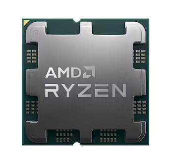

부품 고르는 법 - 부품 별 선택방법
AMD CPU
AMD CPU는 멀티코어 성능과 고용량 캐시 구조에서 강점을 가지며, 이를 기반으로 다중 스레드 활용이 많은 프로그램이나 캐시 의존도가 높은 작업에서 뛰어난 성능을 발휘합니다. 예를 들어, Blender, HandBrake, Cinebench, 7-Zip, DaVinci Resolve와 같은 렌더링·인코딩·압축 작업 프로그램은 AMD의 고코어 구조와 높은 병렬 처리 성능을 효과적으로 활용할 수 있어 유리합니다. 또한, Ryzen 7 7800X3D와 같은 3D V-Cache 탑재 모델은 Baldur's Gate 3, Hogwarts Legacy, Rainbow Six Siege 등과 같이 L3 캐시 의존도가 높은 최신 게임에서 인텔 대비 더 높은 평균 및 최소 프레임을 기록하는 등 게이밍 성능에서도 매우 강력한 면모를 보여줍니다. 뿐만 아니라, VMware, VirtualBox, TrueNAS, Docker, Matlab과 같은 가상화·서버·과학 계산 환경에서도 AMD는 가격 대비 더 많은 코어 수와 캐시 용량을 제공해 가성비 높은 작업용 시스템 구성에 유리합니다. 따라서 영상 제작, 데이터 처리, 다중 작업, 고성능 게이밍 등 멀티스레드와 캐시 활용이 중요한 프로그램 환경에서는 AMD CPU가 매우 효과적인 선택이 될 수 있습니다.
AMD는 Ryzen 시리즈를 중심으로 CPU 라인업을 구성하며, 모델명에서 세대와 성능 등급을 파악할 수 있습니다. 예를 들어 Ryzen 7 7800X는 7세대(Zen 4 아키텍처 기반)의 상위급 제품임을 의미하며, ‘7800’에서 뒤 숫자가 높을수록 클럭 속도, 캐시 용량, 코어 수 등이 향상된 상위 모델을 나타냅니다. Ryzen 3는 보급형, Ryzen 5는 메인스트림, Ryzen 7은 고성능 사용자용, Ryzen 9는 전문가용 고성능 라인업이며, 숫자가 올라갈수록 성능이 향상됩니다. 특히 AMD는 **고성능 캐시 기술인 '3D V-Cache'**가 적용된 제품을 따로 ‘3D’ 모델명으로 출시하고 있습니다. 예를 들어 Ryzen 7 7800X3D는 기존 7800X에 3D V-Cache 기술이 적용된 모델로, L3 캐시 용량이 대폭 증가해 게임 및 일부 작업에서 성능이 비약적으로 향상됩니다. 이 기술은 기존 코어 위에 캐시를 수직으로 쌓는 방식으로, 동일한 TDP에서 캐시 용량을 확장할 수 있어 병목을 줄이는 데 효과적입니다.
| 접미사 | 의미 |
|---|---|
| X | 고성능/오버클럭 가능 모델 (Higher performance/Unlocked) |
| G | 내장 그래픽 포함 (APU, Integrated Graphics) |
| U | 저전력 모바일 프로세서 (Ultra-low power mobile) |
| HS | 고성능 저전력 모바일 프로세서 (High performance, low power mobile) |
| HX | 최고 성능 모바일 프로세서 (Extreme performance mobile) |
| PRO | 기업용/워크스테이션 기능 포함 (Professional features) |
| GE | 저전력 내장 그래픽 포함 데스크탑 모델 (Energy-efficient APU) |
| 3D | 3D V-Cache 기술 탑재 모델 (대용량 캐시 적용, 게임 및 고성능 작업에 유리) |